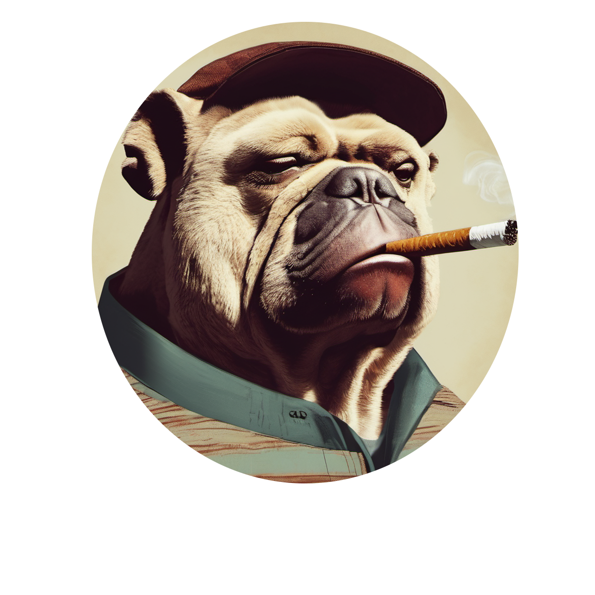

Alo, Ges
Saya Arif Risqon alfaqih
Saya
Saya web developer pemula, yang sedang belajar javascript, dan web
ini saya buat untuk memenuhi tugas akhir matakuliah pemograman web. Web ini di buat dengan mengambil
potongan potngan kode dari berbagai tempat dan di modifikasi agar sesuai keinginan saya
